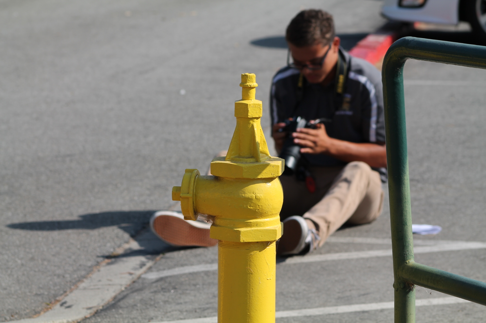

Writings
Some works of mine:
My Sequoia
When I arrived to Room 42 of the hospice where my grandfather had stayed for the past three weeks, I was out of breath. As adrenaline fizzed in my blood, I looked to the three faces in the room: my tio, my tia, and my grandfather.
Neither glanced at me as I deeply inhaled to catch my breath, and drifted towards the side of the hospital bed. As if with the winged shoes, I floated to the low chair that sat empty across the room.
I descended into its lap and watched with intent eyes my grandfather’s chest. I waited for it to rise. I looked to his nostrils. They did not widen. I looked to his mouth. It hung open and agape, deadly still.
He was just silent. No noise, no movement. No flicker or flinch.
If I had looked to a photo of this scene, I would know no difference. Even the air was static as the breeze of artificial cool tiptoed into the room.
If I had looked to a photo of this scene, I would see no signs of death. The ancient skin that clung weakly to even weaker bones was brimful of pigment.
His skin was so delicate that at friction it tore.
His open mouth, lined by pink lips, disclosed a tiny pink tongue and few teeth.
Even with his mouth awkwardly open, he was a peaceful angel.
The forbidding Grim Reaper was absent. The space was empty, except for me and my grandfather. I slipped my gentle hand on his shoulder and rested my other on his delicate arm.With hypnotic movement I caressed him and as my hand slid towards his back, a hint of heat aroused my attention.
My kind hand slipped behind his shoulder. Concealed between the sheet of fabric and the sheet of skin, heat from minutes ago remained.
The warmth rushed from my fingers up my arm to my chest, and a sudden heat overwhelmed me as I blinked back tears.
I rested my forehead on the soft bed, beside him, to hide my sorrow. The fading life was the connection, and I felt my grandfather. I felt him.
I prayed that if God was real, if Heaven was true that He would take my grandfather with him. He deserved eternal happiness, nothing less.
In a still stoop, with my hand on my hero and my heart in my throat, I prayed.
His chest suddenly compressed and I heard a sighing breath. My head glided up and I wiped at my cheeks with my dry arm.
But it wasn’t him, it was my tia leaning over his chest, whispering gratitudes and prayer into his listening ears.
I stood up with a breath and retreated from the my seat, my eyes fixated on his face. He was not frowning, and with his mouth agape, I swore I saw the far edges of his lips curled.
His expression was relaxed, the only wrinkles that lined his countenance were those that were his physical trophies- signs of era and age.
Lines that were as countless as the Sequoia’s.
The tree had fallen, it’s massive weight pulled to earth and tore the release held by sturdy roots.
And from that dead carcass, a new ecosystem would be created.
The death of the mighty Sequoia, with its delicate skin, would share life to the whole community and bring together countless organisms to distribute the mass of it to plant and animal.
And maybe, years later, those plants that have now sprouted into saplings, slowly pulling themselves up to the sky, will look back at that great grandfather tree, study its elaborate and countless lines, and reflect on the legacy that set the foundation of their birth.
Old Alton Bridge
In 1884, Old Alton Bridge was built in Denton, Texas to connect the town of Alton to Denton. Alton was a tiny town that was chosen as the legal center of Denton County. After the county seat was moved to Denton, residents of Alton moved to other towns and Alton eventually disappeared.
There’s talk in Denton about Old Alton Bridge and those adjoining woods. Legends and stories that have been passed on through the generations about a hidden darkness that remains there.
November 3, 1984
As the sound of sand crunching echoed beneath the shoes of the two juveniles that walked along the soaked trail, the trees stood still, the shrubs gazed in silent suspicion, and the moon illuminated the two companions’ pathway. The clouds that had showered the earth a day earlier now hid the sky. The footpath which the boys treaded on meandered through the dense woodlands; twisting so aimlessly that, after a short time of sauntering, the two could no longer say in which direction they have begun walking. The older of the pair was the braver- he was the one who had convinced the other to accompany him on this trip. He hustled loudly on the trail, enthusiastic to reach the woods. The younger boy trod as lightly as he could, trying to make as little contact with the mud as possible while keeping up with his eager friend. They both knew the destination, they had heard the legends, but only one wanted to uncover the unknown truth of Old Alton Bridge. “Will, please slow down.”, the younger boy timidly asked his friend. Yet he received no reply from Will, who quickened his pace. “William!”, the boy pathetically cried a few moments later, “Please, you know I canno-”. Will spun around and violently grabbed his friend’s collar, tightening his grip and pulling him closer as he sternly spoke, “Thomas, you do not know how long I have waited to come to this bridge.” He released his grip and Thomas staggered backwards, wide-eyed. “I have heard too many things- I must learn if they are true. I must!”, Will shouted as he turned away from Thomas and continued to walk down the trail. His friend’s sudden outburst of intensity had caught Thomas off guard and frightened him, but he was not going to go back alone and he resented the thought of remaining there, so he waited for Will to make the turn ahead before hurrying after him.
Passing the forest’s end, Thomas and William at last saw the overpass of legend. Thomas studied its peculiar shape: two tops of hexagons, sitting side-by-side as they stood high above water below. The pair timidly approached the end of it and stared into the deep darkness that lay within its depths. The moon now hid its protective gleam, veiled behind the obscuring clouds that concealed an impending horror. “Will?”, his friend whispered with a breath. William stood tranced at the edge of the bridge, his attention to the shadow that envelope the wooden structure. He lifted his left foot, swaggered, and stepped onto the overpass. “Will?” With his right foot, he pushed himself forward. As the boy’s shoe landed upon the damp wood, a sounding THUMP echoed throughout the silent air and rumbled through the weak timber. William languidly lugged forward and Thomas worriedly walked a step behind. Will walked about half the full length and stumbled onto the railings of the viaduct, grabbing it with an intense fierceness. Thomas moved towards Will, wanting to guide him back home, but doubting whether he himself knew how they could possibly return to Denton. As he raised his hand to help his hopeless friend, he froze as he heard a step- a thudding sound from just behind the wall of shadow that hid the noise. Thomas instinctively turned to the direction of the sound and was compelled to explore it. As he approached the apparent wall, he strangely could not focus to the darkness. He was less than a foot from the sudden edge of light when again he heard the sound of a creature’s step. A quick motion caught his eye and he swung his head downwards toward the cause of the sound . A thin hairy hoof stood protruded into the light and its black toe rotted by a dark, oozy substance. Two long fingers swung beneath Thomas’ chin and pulled up his head so that he stood staring at eyes that shone with a dirty yellow glow. Thomas froze in terror. In front of him, so close that he could reach out and touch it, the long looming demon roared with such a violent voice that every hair on Thomas’ body horrifically stood and his warm blood was chilled colder than ice,
" G E T O F F T H E B R I D G E ! ”
At this instant, William began to mutter uncontrollably. At first, his words were impossibly incoherent but after a quick moment his quiet murmur moved to a momentous howl. “GOATMAN! GOATMAN! GOATMAN! IT’S THE GODDAMNED GOATMAAN!”, he brutally bawled over the rail of the bridge and into the horrible night. When Thomas heard his friend’s hysteric howls, he screamed with all power he had and frantically fled from the bestial beast. His thumping steps were drowned out by the thundering, trembling trot of heavy hooves heaved upon dilapidated planking. Thomas’ unhinged hysteria dominated him as he sweat profusely and horribly squalled from the beating pulse that thudded behind him. When he had reached the bridge’s end he stumbled to a sudden stop and swung around to look behind him. He anxiously searched for William or any sign of his friend with a piercing peer into the dreadful depths of the deep darkness. “WILL! WILL!”, the terrified teen hopelessly hollered after he saw no such movements nor signals. Before he could cry aloud a third time, William appeared from the shadow of the viaduct sprinting, sweating, swearing savagely, and weeping wildly toward his companion with a panicked glaze in his terrorized eyes.
Now a few meters from him, Thomas cried out hastily to Will as he scrambled across the thumping timber. When he could clearly see Will’s frightened face, Thomas began to turn from his friend and took the step to begin his dash towards the woods. However, he headlessly hesitated before his flee and caught sight of something he mournfully wished he had not: as his beloved friend bolted towards the end of the haunted overpass, a hairy gaunt, skeletal arm reached out from beneath the underside of the planking. The monstrous hand reached for William and violently clamped its angular appendages around both of the poor boy’s ankles, tugging with such a force that the unlucky sufferer was slammed onto the solid lumber and wrenched toward the left rails. William’s fragile head rammed aggressively into the wooden railing - upon which he had earlier stood upon - with a meaty thump. The collapsed body slid over the side of the bridge and disappeared.
A deep, bellowing sound suddenly reverberated in every direction as its pitch slowly evolved into a shrill screeching cry, causing Thomas to frightfully palm his hands over his pained ears and dreadfully weep. From the deep darkness of the shadow that hid beneath the bridge, the harsh glowing eyes of a grim demon glared at the boy who escaped the nightmare of horror that awaited him. Yet it listened gleefully as his bawling and screaming dissolved into the silence of the night.
Photography
Photos I've taken:
`
`
`
`
`
`

`
What do you think?
Videos
Videos I enjoy:
`
`
Code
Some code of the home page inserted here!
Welcome to My Website!
You probably don't give a "flip" about who I am or what I've done, but if you happened to come around to this website
I hope you enjoy your stay. Look around and learn about me!
What's the Purpose?
I made this website because it was an assignment for my Computer Science Principles class.
I also made it because writing html and css is very fun. So here it is!
Things You Should Know
DON'T EXPECT THIS TO BE PRO. I ONLY GOT A WEEK OR SO FOR THIS. But I did my best with the time I had.
In case you were curious, here's the rubric.
What Else?
Nothing much, click here for a good time!
PS- Try to find the secret page!
Hint: It's invisible
Pun of the Day
“My pet feline fell into a bowl of seltzer water yesterday. She's been cat-a-tonic ever since.”
8/22/18